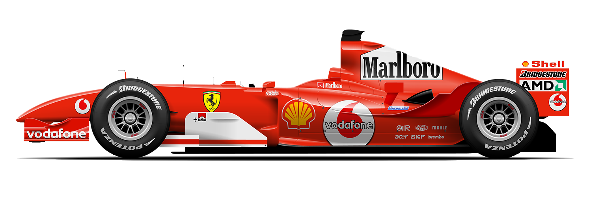
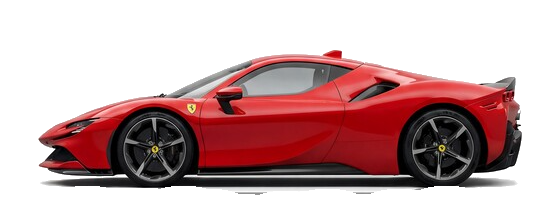

312T (1975)
Niki Lauda's title-winning car, famous for its transverse gearbox and flat-12 engine.
A tribute fan hub celebrating the passion, history, and speed of Scuderia Ferrari in Formula 1.
See Next Race CountdownScuderia Ferrari is the oldest surviving and most successful team in Formula 1 history, founded by Enzo Ferrari.
Ferrari holds the record for the most Constructors' Championships won by any team in F1 history.
Every Ferrari F1 car is designed and built at the legendary factory in Maranello, the heart of the Prancing Horse.
Niki Lauda's title-winning car, famous for its transverse gearbox and flat-12 engine.

Widely regarded as one of the most dominant F1 cars ever, driven by Michael Schumacher.

The 2019 challenger built to mark Ferrari's 90th anniversary in motorsport.
Want the full history of the team? Visit the official Scuderia Ferrari F1 page.